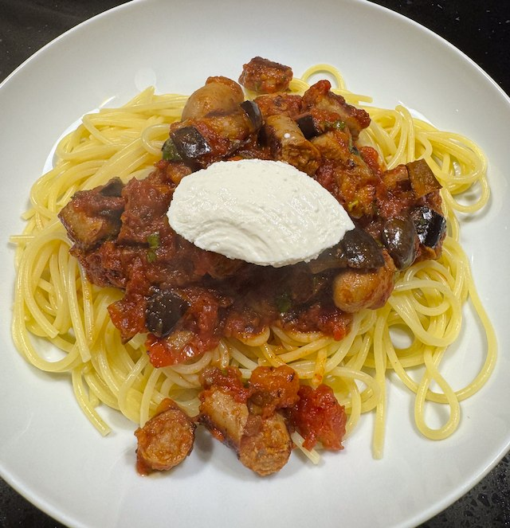
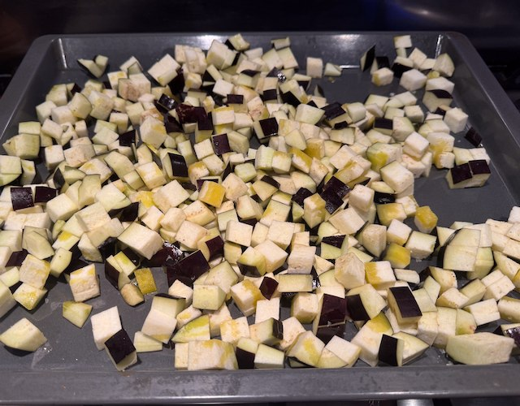
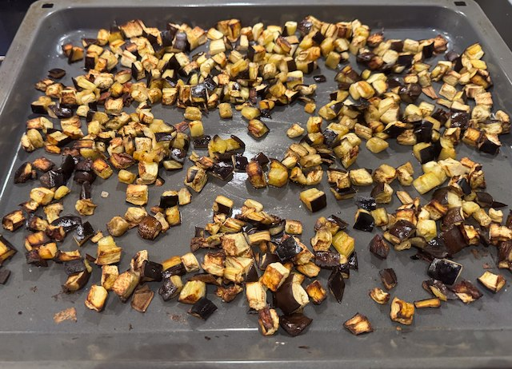

Sausage and Aubergine Pasta
This recipe is adapted from An A-Z of Pasta by Rachel Roddy.

Ingredients
- olive oil
- 2 aubergine, 1cm dice
- 1 pack (375g) thin sausage
- 2 garlic clove, thinly sliced
- 2 tin tomatoes
- ½ tsp brown sugar
- ½ tsp dried chillies
- fresh basil, chopped
- 50g ricotta cheese
- 500g spaghetti
Method
Cook the Aubergine. Heat the oven to 200°C fan. Put the diced aubergine on an oven tray, add salt and olive oil and mix around. Cremate in the oven for 30 minutes. Stir around after 20 min.
Cook the sausage. Heat a frying pan till hot. Add olive oil and sausage and cook for a couple of min. Shake the pan and turn the heat down to medium. You are aiming for a slow cook where gunk from the sausages collects on the bottom of the pan. You need to keep you eye on the pan - you don't want to burn the gunk.
Make the sauce. Heat a saucepan on low. Add olive oil and garlic, and gently cook the garlic for a couple of minutes. Add the tomatoes, sugar and chillies. Turn the heat up to medium - you want to gently bubble the sauce for about 20 minutes.
Add the sausage. When the sausage are cooked, use scissors to cut them into the sauce. Deglaze the sausage pan and add to the sauce.
Add the aubergine. When the aubergine are looking browned, add them to the sauce. Add the chopped basil. Taste for salt.
Cook the pasta following the packet timings. I use 1.5 litre of water with 1 tbsp of salt.
Serve in a bowl with the sauce and a dollop of ricotta cheese.
 